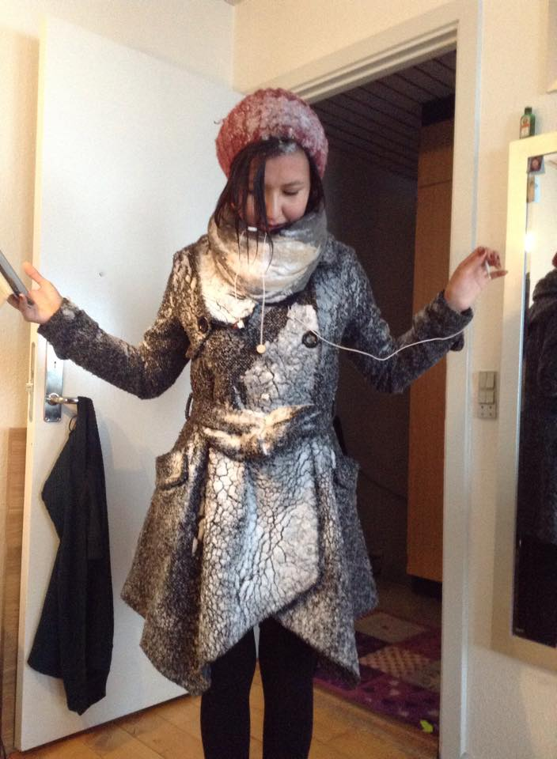

Name: Stinnia Hansen Kleist
Age: Still developing
Origin: South Greenland
Skills: Under development
Most wanted skills: To become an amazing web developer.
I come from a very small town, and I grew up without any connection to the outer world. Only the television and the telephone.
When I was around 8 years old, my mom got a new laptop, and I was amazed. My little mind was blown!
To be able to play internet games!
To be able to install new games!
To be able to snapchat my friends!
Just kidding, Snapchat is not even a computer program. Also snapchat didn't exist.
I can still hear the connecting-noise the modem made, when we wanted to enter the world of the internet, the amazing noise, that lasted at least 25 whole seconds!
Nowadays if some webside doesn't load within 2 seconds, I lose my patience.
Since I was a young person, I've been fascinated by technology. I've always been able to find a solution, if for example the computer had problems. Mind you, most of the problems could be solved with an easy turn off and turn on again. But my family didn't know that, and I was the hero.
So here I am now, on my way to know everything, there is to know about the internet.
I am hoping to master html, css and js, so I can create the most awesome websites.
Not only for myself, but also for you.
